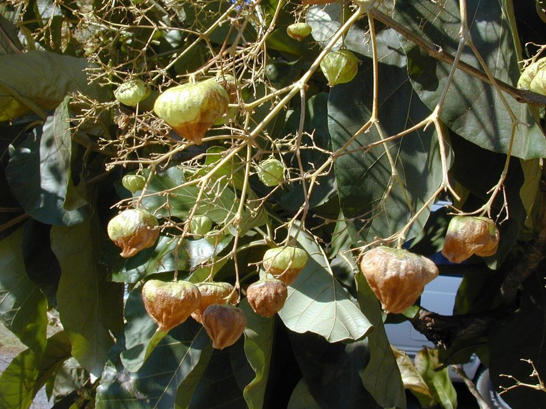

सागवानTeak
Tectona grandis · Lamiaceae · FLR-0070

- Scientific name
- Tectona grandis L.f.
- Family
- Lamiaceae
- Hindi
- सागवान
- Status here
- cultivated
- IUCN
- LC
When to look कब देखें
Present all year.
सागवान / Teak
Tectona grandis L.f. — Lamiaceae
सागवान (सगौन / टीक) — भारत का सबसे मूल्यवान व्यावसायिक इमारती लकड़ी (commercially valuable timber) देने वाला एक विशाल, पतझड़ी (deciduous) पेड़ है। यह मूल रूप से पश्चिमी घाट और मध्य भारत का निवासी है, जिसे उत्तर प्रदेश के वन विभाग द्वारा बड़े पैमाने पर वन रोपण योजनाओं के तहत लगाया गया है। इसकी सबसे बड़ी पहचान इसके विशालकाय, खुरदरे पत्ते (large, sandpaper-rough leaves) हैं जो 60 सेमी तक लंबे हो सकते हैं। सूखी सर्दियों में ये पत्ते पूरी तरह से गिर जाते हैं, जिससे पेड़ केवल सूखी टहनियों जैसा दिखता है। सागवान की लकड़ी अत्यंत कठोर, दीमक-रोधी (termite-resistant), और टिकाऊ होती है, जिसका उपयोग प्रीमियम फर्नीचर, दरवाजे, खिड़कियाँ और नावें बनाने के लिए किया जाता है। पारिस्थितिक रूप से, सागवान की कृत्रिम खेती (monoculture plantations) में प्राकृतिक जंगलों की तुलना में जैव-विविधता बहुत कम होती है।
Quick Identification त्वरित पहचान
| Feature | Description |
|---|---|
| Tree habit | Large deciduous tree up to 20–30 meters high, with a straight, tall trunk and a light, rounded canopy |
| Leaves | Opposite, massive, broadly oval (elliptic), measuring 30–60 cm, with a very rough, sandpaper-like upper surface |
| Bark | Ash-grey or light brown, thin, fibrous, peeling off in long, narrow vertical strips |
| Flowers | Small, white or pale yellow, arranged in massive, branched clusters (panicles) at the tips of branches |
| Fruit | A round, spongy, bladder-like drupe, enclosed within a papery, inflated calyx (husk) |
Field tip: Look in forest department plantations. Search for trees with straight, tall trunks and huge, rough leaves. If you rub the leaf surface, it feels exactly like coarse sandpaper. In winter, look for dry, papery, balloon-like husks scattered on the forest floor under the bare trees.
Morphology आकारिकी
Biometrics (typical measurements of mature trees in the northern Indian plains):
| Measurement | Range |
|---|---|
| Tree height | 20–30 m |
| Trunk diameter (DBH) | 50–100 cm |
| Leaf length | 30–60 cm |
| Leaf width | 25–40 cm |
| Flower diameter | 6–8 mm |
| Drupe fruit diameter | 1.2–1.8 cm |
Trunk and Bark: The trunk is straight, often fluted at the base in old trees. The bark is thin, grey, peeling vertically in long paper-thin strips.
Foliage: Opposite, elliptic-obovate leaves. The upper surface is rough, covered with small calcified hairs, while the lower surface is soft and velvety with reddish-brown hairs. When fresh leaves are crushed, they exude a red juice that stains skin.
Flowers: Small, white, bisexual, 5–6 lobed, arranged in large, branched, terminal panicles that rise above the leaves in late summer.
Fruit: A hard, stony drupe, enclosed in an inflated, globose, papery light-brown calyx that acts as a parachute to disperse the fruit via wind and water.
Associated Species / Interactions संबंधित प्रजातियाँ
- Pollinators: The massive flower clusters are visited by bees, flies, and beetles.
- Ecological gap: In monoculture plantations, the dense leaf litter decays slowly, suppressing ground grass growth and reducing the diversity of insects, spiders, and birds compared to native woodlands.
- Predators: Woodpeckers often search the rough bark for boring beetles.
Pests and Diseases कीट और रोग
- Teak Defoliator: Hyblaea puera is a destructive caterpillar pest. In early monsoon, these caterpillars can completely strip all leaves from entire plantations within days, reducing wood growth.
- White Grub: Holotrichia larvae (white grub / SFL-0005) attack the roots of young teak saplings in nurseries, causing sudden dieback.
- Teak Rust: Caused by the fungus Olivea tectonae, creating orange-yellow spots on leaves and causing premature leaf drop.
Traditional and Ethnobotanical Use पारंपरिक और नृवंशवनस्पति उपयोग
- Premium Termite-Resistant Timber: The heartwood contains high concentrations of natural oils and silica, making it termite-proof and weather-resistant, used for premium doors, furniture, and wood carving.
- Red Dye Preparation: The fresh, young leaves are crushed with water, releasing a deep red pigment used traditionally to color cotton fabrics and wooden toys.
- Ayurvedic Skin Paste: The wood powder is mixed with water to make a smooth paste, applied topically in traditional practices to relieve skin itching, eczema, and minor burns.
- Natural Sandpaper: The mature, dry leaves are collected and used by village carpenters as a natural abrasive to smooth down soft wood surfaces before polishing.
Expected Locally स्थानीय रूप से अपेक्षित
Not a field record. Written from published accounts for eastern Uttar Pradesh. No confirmed local sighting yet — if you have seen it, that is what the atlas needs.
अभी तक स्थानीय पुष्टि नहीं। यह विवरण प्रकाशित स्रोतों से है, किसी अवलोकन से नहीं।
A common tree planted in rows along field boundaries and in commercial timber plantations across the Basti district. They are regularly observed in the Harraiya and Vikramjot blocks. Local farmers value teak as a "green investment," planting them on boundaries to harvest for wood when their children marry. During the hot winds of May, the dry fallen leaves create a loud crackling sound when walked on.
Distribution वितरण
Global range: Native to India, Myanmar, Thailand, and Laos; widely introduced as a valuable commercial plantation tree throughout tropical Asia, Africa, and Central America.
In India: Native to the Western Ghats, central India, and parts of Bihar; planted extensively in all states.
In Uttar Pradesh: Common state-wide in all forestry reserves and private farm plantations.
In Basti district / eastern UP: Widespread across all agricultural blocks.
Research Questions शोध प्रश्न
Anyone can investigate these | कोई भी इन प्रश्नों की जाँच कर सकता है
- How many years does a Teak tree take in Basti's clay soil to reach a harvestable trunk diameter of 40 cm? — Track forestry records.
- Do birds nest less frequently in mono-teak plantations compared to mixed mango groves in your block? / क्या आपके ब्लॉक में सागवान के बागानों में मिश्रित आम के बागों की तुलना में पक्षी कम घोंसले बनाते हैं? — Conduct bird nest surveys.
- What is the percentage of leaves damaged by the Teak Defoliator caterpillar in a local plantation during July? — Measure leaf loss.
- How long does a freshly fallen dry Teak leaf take to decompose completely on the ground? — Conduct litter decay experiments.
- Does the red juice exuded from crushed Teak leaves act as a natural ink on different paper types? / क्या सागवान के पत्तों से निकलने वाला लाल रस विभिन्न प्रकार के कागजों पर प्राकृतिक स्याही का काम कर सकता है? — Test dye longevity and color shades.
Similar Species मिलती-जुलती प्रजातियाँ
| Species | How to tell apart | comparison |
|---|---|---|
| Sal (Shorea robusta) | Has smaller, glossy, smooth leaves; seed has five twisting wings; bark is deeply fissured; evergreen | साल — चिकने पत्ते, पंखदार बीज, गहरी छाल |
| Jackfruit (Artocarpus heterophyllus) | Has smaller, glossy oval leaves; exudes sticky white latex; huge spiny green fruits | कटहल — सदाबहार, सफेद दूध, विशाल कांटेदार फल |
| Indian Beech (Millettia pinnata) | Has compound pinnate leaves (5-9 leaflets); pinkish flowers; flat woody oval pods | करंज — पिन्नेट पत्ते, मटर जैसे फूल, चपटी फलियाँ |
Field rule: Large tree with straight grey trunk, massive sandpaper-rough leaves (30–60 cm) that fall in winter, and terminal clusters of small white flowers followed by papery balloon-like fruits, is the Teak.
Taxonomy & Classification वर्गीकरण
Original description. Carl Linnaeus the Younger described the Teak as Tectona grandis in 1782 in his Supplementum Plantarum (p. 151). The type locality was listed as India. The genus name Tectona is derived from the Portuguese teca (teak), which comes from the Malayalam tekka. The specific name grandis is Latin for large or magnificent.
Subspecies. Monotypic — no subspecies are currently recognised.
Family and order placement. Placed in the order Lamiales, family Lamiaceae (mint family), subfamily Prostantheroideae. It was historically placed in Verbenaceae but transferred based on molecular data.
Phylogenetic notes. The genus Tectona contains only 3 species of large hardwood trees in Asia, representing an early diverging lineage within the Lamiaceae adapted to monsoonal climates.
IUCN status rationale. Assessed as Least Concern (LC) by the IUCN Red List (assessed by the IUCN SSC Global Tree Specialist Group). It is extensively cultivated, although wild native populations are under pressure from habitat loss and logging.
Photo Gallery फोटो गैलरी
References संदर्भ
- Linnaeus filius, C. (1782). Supplementum Plantarum Systematis Vegetabilium. Braunschweig, p. 151. [original description]
- Brandis, D. (1906). Indian Trees. Archibald Constable & Co., London.
- Troup, R. S. (1921). The Silviculture of Indian Trees. Oxford University Press.
- Tewari, D. N. (1992). A Monograph on Teak (Tectona grandis). International Book Distributors, Dehradun.
- World Flora Online (2024). Tectona grandis taxon details.
- GBIF Occurrence Data — Tectona grandis, India (2010–2025).
Source file: species/flora/trees/teak.md